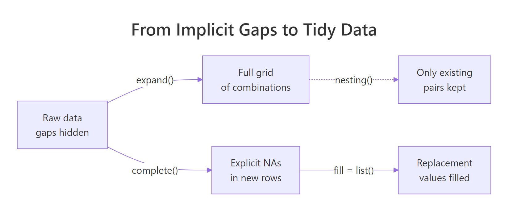

tidyr expand() & complete() in R: Make Implicit Missing Values Explicit
Sometimes your data hides rows that should be there but aren't — a month with zero sales, a panel subject who skipped a visit, a date with no trades. These are implicit missing values, and they break plots, models, and joins silently. tidyr's expand() and complete() drag those gaps into the open as explicit NAs you can then fill.
Why should you care about implicit missing values?
Picture a small sales table: three products, three months, but only five rows because some products didn't sell in some months. Nothing looks wrong until you plot monthly totals and a whole column is missing. Rows that should exist but don't are called implicit missing values. complete() turns them into real rows you can see and handle — here's the one-liner that does it.
Five rows went in, nine rows came out. The four new rows carry NA in the units column — those are the combinations that were missing entirely from the raw data. You can now spot them, fill them, or count them. Before complete() they were invisible.
Try it: Build a 4-row tibble with three cities across two days (one city is missing on one day), then use complete() to make every city-day pair appear.
Click to reveal solution
Explanation: complete(city, day) asks tidyr for every unique city crossed with every unique day, keeps existing temperatures, and fills the rest with NA.
How does expand() build all combinations?
Before fixing implicit misses, it helps to see them. expand() is the inspection tool: given a data frame and a set of columns, it returns every unique combination of those columns — and only those columns. The row count of the result has nothing to do with the row count of the input.
Notice the units column is gone — expand() returns the grid alone, not your data joined to it. Use this when you want a clean scaffold you can compare against the original. Think of it as the "what should exist" blueprint.
If you want to build a grid from bare vectors — without any data frame involved — reach for crossing(). It's expand()'s standalone sibling and accepts named arguments directly.
Same nine rows, but crossing() never touches the sales tibble. This matters when you want the full expected universe of values regardless of what the data contains — for example, every month in a fiscal year whether or not sales were logged.
expand() when the data is authoritative ("all months that appear"); use crossing() when you know the universe externally ("all 12 months of the fiscal year").Try it: Use expand(sales, month, product) together with anti_join(sales) to list exactly which (month, product) pairs are missing from the raw data.
Click to reveal solution
Explanation: expand() lists every expected pair; anti_join() keeps only the expected pairs that don't appear in the original data.
How does complete() fill missing combinations?
complete() is expand() plus dplyr::full_join() plus tidyr::replace_na() rolled into one call. You give it the columns to expand and it returns your original data with missing combinations inserted and optional default values filled in.
The fill argument takes a named list. Each name is a column; each value is what NAs in that column should become for the newly created rows.
Same nine rows as before, but now the previously-NA units are zero — the right default when "no sale" means "zero units sold." You can pass several columns at once: fill = list(units = 0, revenue = 0, discount = 0).
What if the raw data already contains a real NA that you want to preserve — say, a genuinely unknown sale? By default complete() replaces it along with the new NAs. Set explicit = FALSE (tidyr 1.2+) and the fill list only touches the rows complete() just added.
Jan/B keeps its original NA because the row already existed in the data. Only Feb/B — a brand-new row — gets the default zero. This distinction matters when "we don't know" and "definitely zero" mean different things in your analysis.
tidyr::fill() after complete()), domain mean for survey responses. The wrong default silently biases every aggregate that follows.Try it: A grades tibble has four rows across three students and two exams but one pair is missing. Use complete() with fill = list(score = 0) so every student has every exam.
Click to reveal solution
Explanation: complete(student, exam) builds every student-exam pair; the fill list replaces the NAs in the two newly added rows with zero.
How do you fill missing dates in a time series?
The most common real-world use of complete() is filling date gaps. Your data might log daily sales, website visits, or sensor readings — but on days with no activity, no row gets written. complete() plus seq.Date() rebuilds the full calendar.
Pass the date sequence as a named argument to complete(). The name is the column; the value is the full range of values you want to see.
The two missing days (March 3 and March 6) now appear as proper rows with NA visit counts. A downstream plot will draw gaps where there were gaps; a forecasting model can now see that the time series is regular.
A common next step is to carry the last observation forward. tidyr::fill() handles that — the .direction = "down" argument says "copy the previous non-NA value downward."
March 3 inherits March 2's count; March 6 inherits March 5's. That's last-observation-carried-forward, the workhorse of time-series imputation when "no data" really means "no change reported."
visit_date is character, complete() will error out with a type mismatch. Wrap it with as.Date() first or parse it with lubridate::ymd().Try it: A 4-row prices tibble logs the closing price on four days between March 1 and March 5 (March 3 is missing). Fill the calendar so every day between the min and max appears.
Click to reveal solution
Explanation: Passing date = seq.Date(...) as a named argument tells complete() the exact set of dates to expand to, regardless of what the data contains.
When should you use nesting() instead?
Sometimes two columns describe the same entity — a patient_id and their diagnosis, a product_code and its category, an employee and their department. These columns are linked, not independent, so you never want to mix one patient with another patient's diagnosis. That's exactly what raw complete() would do.
nesting() tells tidyr: "treat these columns as a unit — only the combinations that already appear together in the data are valid."
Raw complete() produced 12 nonsense rows that paired every patient with every diagnosis — including diagnoses they never had. complete(nesting(patient_id, diagnosis), visit) keeps each (patient_id, diagnosis) pair exactly as it appeared and crosses it with every visit. The only new row is patient 3's V2, which is genuinely missing.
nesting() so tidyr treats them as a single unit.Try it: An hours tibble logs how many hours each employee worked per month. Each employee belongs to exactly one department. Use complete(nesting(employee, department), month, fill = list(hours = 0)) so every employee has every month, without mixing departments.
Click to reveal solution
Explanation: nesting(employee, department) keeps each employee tied to their real department. The result has the three real employees crossed with two months, and the two genuinely missing rows fill to zero.
How do expand() and complete() work with groups?
When you apply complete() to a group_by()-ed tibble, it completes each group independently. That's exactly what you want for multi-site panels: every clinic, store, or region gets its own complete grid without cross-pollination.
North has all four product × month pairs, and so does South — each region independently. The grouping column region isn't expanded (you can't complete() a grouping column; tidyr will error if you try), which is the safe default.
ungroup() afterwards unless downstream steps also need grouping.Try it: A clinic_visits tibble logs visits per clinic per date. Group by clinic and complete the date range so every clinic has every day between its min and max.
Click to reveal solution
Explanation: Inside each group, min(date) and max(date) are computed on that group's rows only, so each clinic gets its own tightly-fit calendar.
Practice Exercises
Two capstone problems that combine several tools from this tutorial. The variable names start with my_ so they don't collide with the tutorial's tibbles.
Exercise 1: Fill a stock price panel
You have daily close prices for two tickers across five business days, but a few rows are missing. Produce a filled panel where every ticker has every date and any missing closes are carried forward from the previous day.
Click to reveal solution
Explanation: Group by ticker so each ticker expands independently, supply an explicit five-day sequence as the target range, then chain fill() to copy the last observed close forward over the NAs complete() inserted.
Exercise 2: Find missing student-exam pairs without adding rows
Given a grades tibble that's incomplete, return a data frame listing only the (student, exam) pairs where no grade exists — without touching the original.
Click to reveal solution
Explanation: expand() gives every expected student-exam pair; anti_join() keeps only the pairs that don't appear in the original data. No rows are added to my_grades itself.
Complete Example
Here is an end-to-end pipeline that ties everything together. The raw regional_sales_raw tibble has gaps across regions, products, and months. The goal is per-region monthly totals — and those totals will be wrong unless every region has a row for every product in every month.
Without the complete() step, North's March total would count only product B (six units) and omit product A entirely — even though the "correct" interpretation is that A sold zero units. After completion, the totals are consistent across regions, months, and products, and a downstream plot will show all three months for both regions without gaps in the x-axis.
Summary
| Function | What it returns | When to use |
|---|---|---|
expand(df, x, y) |
Grid of all x × y combinations only | Inspect the full combination space or build a scaffold |
complete(df, x, y) |
Original rows + missing combos with NA | Turn implicit missing into explicit missing |
complete(..., fill = list()) |
As above, NAs replaced with defaults | Fill with domain-appropriate defaults |
complete(nesting(x, y), z) |
Only existing (x, y) pairs × z |
Panel data with linked columns |
crossing(x, y) |
Grid from vectors (no data frame) | Build a scaffold from scratch |
full_seq(x, period) |
Full numeric sequence | Fill numeric gaps |
Key takeaways:
- Tidy data has a row for every combination that should exist — even if the measurement is NA.
complete()equalsexpand()plusdplyr::full_join()plustidyr::replace_na()in a single call.- Use
nesting()for columns that describe the same entity; pass raw arguments for genuinely independent columns. - Pass sequences by name for dates (
seq.Date) and numerics (full_seq) to expand to a known universe. group_by() |> complete()gives each group its own independent grid — ideal for multi-site panels.

Figure 1: From raw data with gaps, expand() builds the full grid, complete() fills in explicit NAs, and a fill list replaces them with sensible defaults.
References
- tidyr documentation —
complete(). Link - tidyr documentation —
expand()andcrossing(). Link - tidyr documentation —
full_seq(). Link - Wickham, H. & Grolemund, G. — R for Data Science (2e), Chapter 18: Missing values. Link
- tidyr 1.2.0 release notes — introduces the
explicitargument. Link - tidyr documentation —
fill()for carry-forward imputation. Link
Continue Learning
- pivot_longer() and pivot_wider(): Reshape Data in R Without Losing Your Mind — the parent reshaping guide that sets up why long data so often needs completing.
- Missing Values in R: Detect, Count, Remove, and Impute NA — once gaps are explicit NAs, learn how to count, visualise, and impute them.
- tidyr separate() & unite() in R: Split & Combine Character Columns — the sibling tidyr helper pair for splitting and rejoining character columns.